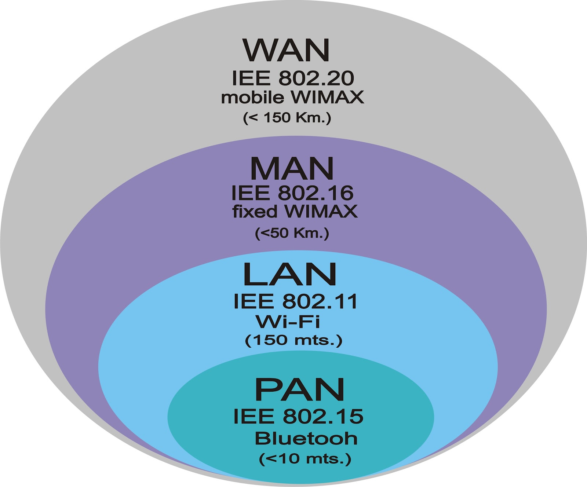
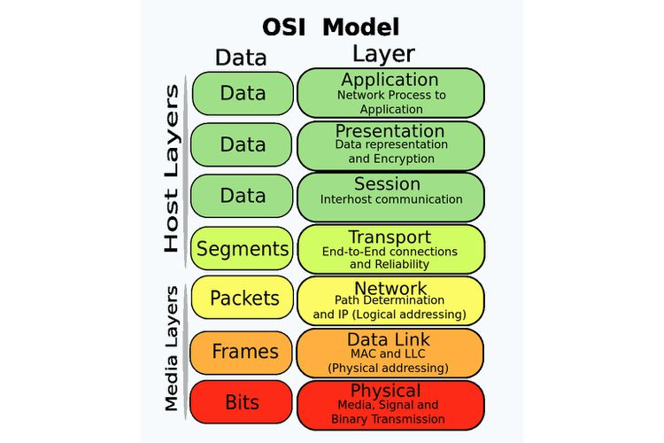
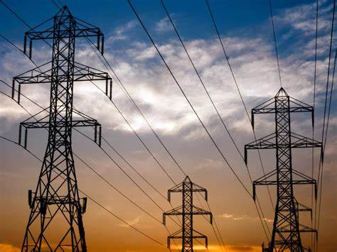
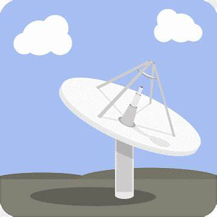
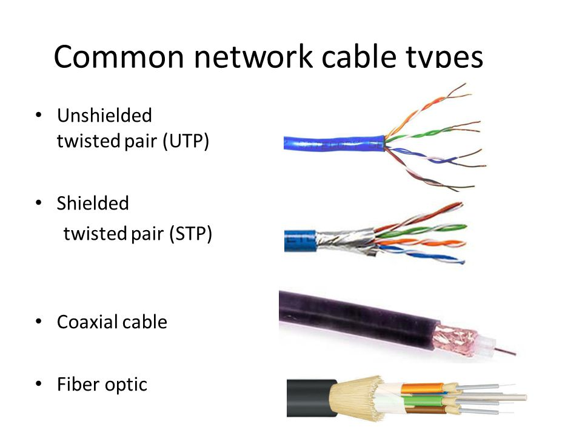

Choose the summary-اختر التلخيص
Benefits Of Networks:
:فوائد الشبكات
Types Of Networks:
:أنواع الشبكات

Open System Layers:
:طبقات النظام المفتوح

Transmition Systems:
:نظم الأرسال

Transmission Problems:
:معيقات ومشاكل التراسل

Types of Network Cables:
:أنواع كوابل الأنترنت

Made by: Nader Aldamaira